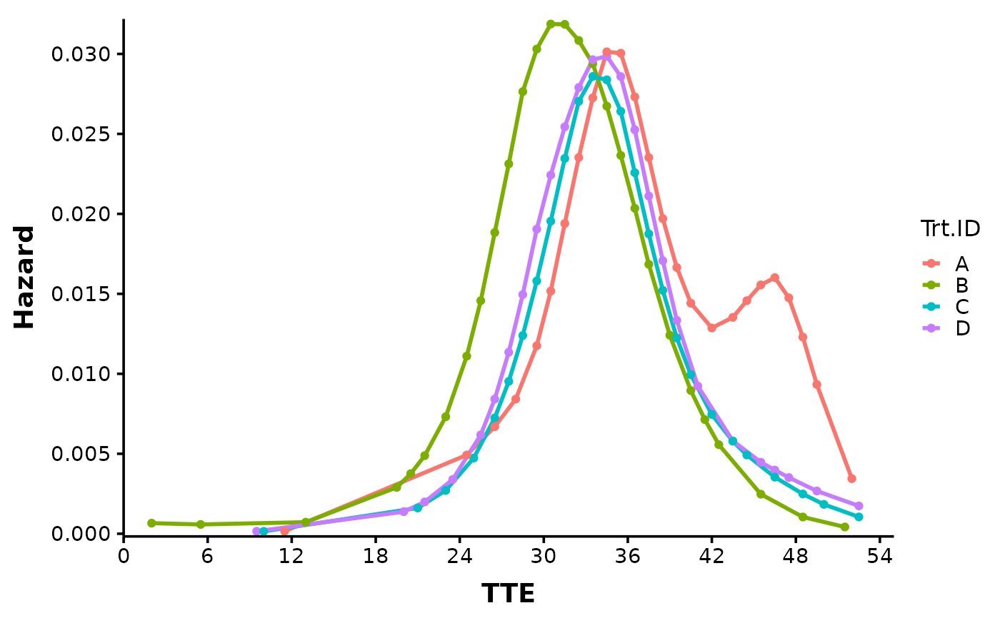
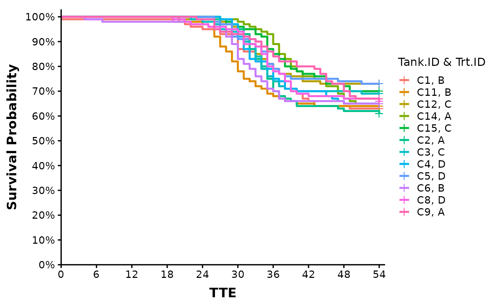
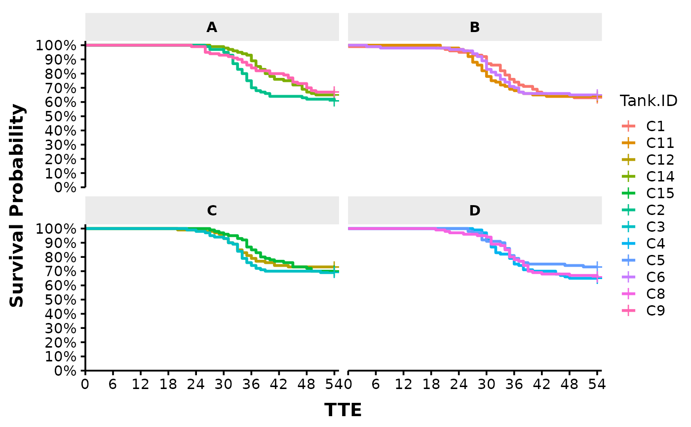

Produces a Kaplan-Meier Survival Plot and/or Hazard Time Plot from survival data. Each plot contains multiple curves for the different treatment groups. Curves for each tank can also be generated using the argument plot_bytank = TRUE. Plots saved by automatically to working directory.
Arguments
- surv_db
A survival dataframe as described in Details.
- xlim
A vector specifying the plots x-axis lower and upper limits, respectively.
- ylim
A vector specifying the Survival Plot y-axis lower and upper limits, respectively. Defaults to c(0, 1) which indicates 0 to 100% Survival Probability, respectively.
- xlab
A string specifying the plot x-axis label. Defaults to "Days Post Challenge".
- lambda
Smoothing value for the hazard curve. Higher lambda produces greater smoothing. Defaults to NULL where
bshazard::bshazard()uses the provided survival data to estimate lambda; NULL specification is recommended for large sample size situations which usually occurs on our full-scale studies with many mortalities and tank-replication. At low sample sizes, the lambda estimate can be unreliable. Choosing a lambda of 10 (or anywhere between 1-100) probably produces the most accurate hazard curve for these situations. In place of choosing lambda, choosingphiis recommended; see below.- phi
Dispersion parameter for the count model used in hazard curve estimation. Defaults to NULL where
bshazard()uses the provided survival data to estimate phi; NULL specification is recommended for large sample size situations. At low sample sizes, the phi estimate can be unreliable. Choosing a phi value of 1 for low sample sizes is recommended. This value of 1 (or close) seems to be that estimated in past Tenaci data (QCATC997; phi ~ 0.8-1.4) where there are large sample sizes with tank-replication. The phi value of 1 indicates the set of counts (deaths) over time have a Poisson distribution, following the different hazard rates along the curve and are not overdispersed (phi > 1).- dailybin
Whether to set time bins at daily (1 TTE) intervals. Refer to the
bshazard()documentation for an understanding on the role of bins to hazard curve estimation. Please set to TRUE at low sample sizes and set to FALSE for large sample sizes (often with tank replication), although at large sample sizes either TRUE or FALSE produces similar results usually. Defaults to TRUE.- plot
Which plot to output. Use "surv" for the Kaplan-Meier Survival Curve, "haz" for the Hazard Curve, or "both" for both. Defaults to "both".
- colours
Vector of color codes for the different treatment groups in the plot. Defaults to ggplot2 default palette.
- theme
A string specifying the graphics theme for the plots. Theme "ggplot2" and "prism" currently available. Defaults to "ggplot2".
- trt_order
Vector representing the order of treatment groups in the plots. Defaults to NULL where alphabetical order is used.
- data_out
Whether to print out the survival and/or hazard databases illustrated by the plots. Defaults to FALSE.
- plot_bytank
Whether to analyze and plot the data by tanks. Defaults to FALSE.
- plot_save
Whether to save plots in the working directory.
- plot_prefix
A string specifying the prefix for the filename of the saved plots. Defaults to "ONDA_XX".
- plot_dim
Vector representing the dimensions (width, height) with which to save the plot in .tiff and .pptx.
Value
Returns a list containing the Kaplan-Meier Survival Curve and the Hazard Curve if plot = "both". If only one plot is to be calculated and shown, set either plot = "haz" or plot = "surv".
If data_out = TRUE, returns dataframes associated with the survival plots.
Details
The survival dataset should be a dataframe containing at least 4 different columns:
"Trt.ID" = Labels for treatment groups in the study.
"Tank.ID" = Labels for tanks in the study (each tank must have a unique label).
"TTE" = Time to Event. Event depends on "Status".
"Status" = Value indicating what happened at TTE. 1 for dead fish, 0 for survivors or those sampled and removed.
Each row should represent one fish. For an example dataframe, execute data(surv_db_ex) and view.
For details on the statistical methodology used by bshazard::bshazard(), refer to: here.
General concept: h(t) the hazard function is considered in an count model with the number of deaths as the response variable. I.e, death_count(t) = h(t) * P(t) where P(t) is the number alive as a function of time and h(t) is modeled over time using basis splines. The basis spline curvatures is assumed to have a normal distribution with mean 0 (a random effect). Based on this assumption, the author found that the variance of curvatures (i.e. smoothness) is equal to the over-dispersion (phi) of the death counts related (divided) by some smoothness parameter (lambda). Phi and lambda can be estimated from the data or specified by the user. Specification can be helpful in low sample size situations where overdispersion (phi) estimates have been found to be unreliable and clearly wrong (based on my understanding of realistic estimates and what was estimated in past data with adequate, large sample sizes).
See also
Link for executed Examples which includes any figure outputs.
Examples
# Starting from an example mortality database, we first generate the complete survivor
# data using Surv_Gen()
data(mort_db_ex)
surv_dat = Surv_Gen(mort_db = mort_db_ex,
starting_fish_count = 100,
last_tte = 54)
#> [1] "Your total number of tanks is: 12"
#> [1] "Your total number of treatment groups is: 4"
#> [1] "Your total number of fish in the output data is: 1200"
# Create plot by feeding surv_dat to Surv_Plots()!
Surv_Plots(surv_db = surv_dat,
plot_prefix = "QCATC777",
xlim = c(0, 54),
ylim = c(0, 1),
xlab = "TTE",
plot = "both",
dailybin = FALSE)
#> NOTE: entry.status has been set to 0 for all.
#> NOTE: entry.status has been set to 0 for all.
#> NOTE: Dropping 1 rows with duration of follow up < tol
#> NOTE: entry.status has been set to 0 for all.
#> NOTE: entry.status has been set to 0 for all.
#> $Survival_Plot
#>
#> $Hazard_Plot

#>
# To get tank-specific plots and insights, set the argument plot_bytank to TRUE.
Surv_Plots(surv_db = surv_dat,
plot_prefix = "QCATC777",
xlim = c(0, 54),
ylim = c(0, 1),
xlab = "TTE",
plot = "both",
dailybin = FALSE,
phi = 1.5, #often needed for accurate estimation in single tank/group cases
plot_bytank = TRUE)
#> $Survival_Plot

#>
#> $Hazard_Plot

#>